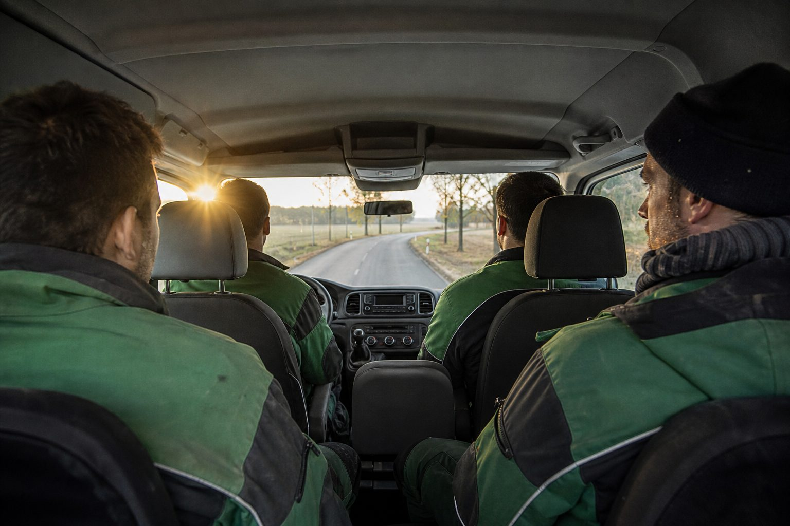

Muss ich die Fahrzeit zur Baustelle bezahlen?
Die Fahrt vom Betrieb zur Baustelle und zurück ist Arbeitszeit, für Fahrer wie Mitfahrer, und grundsätzlich zu vergüten. Tarifverträge können die Vergütung pauschalieren oder anders regeln; tarifgebundene Betriebe wenden den Rahmentarifvertrag an. Der Weg von der Wohnung zum Betrieb ist keine Arbeitszeit.
2 Min. Lesezeit